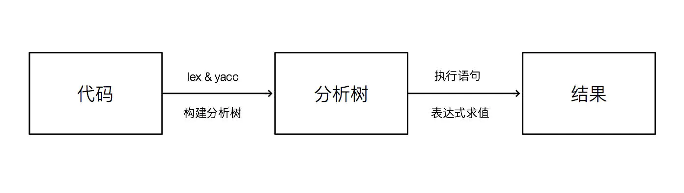
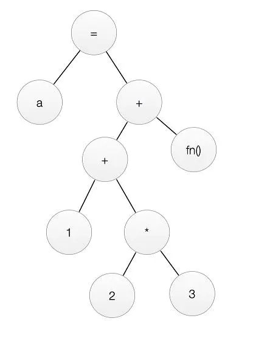

写一个简单的解释器
我用 C 语言写了一个简单的动态语言解释器，代码放在了 github 上面：hedegehog。
先简单介绍下这门语言。hedgehog 的多数设计和 python 比较相似，无需声明变量类型，if,for 等语句没有块级作用域。 语法上又有点像 go 语言： if, for 不需要 (), 但是后面的代码块都必须加 {}; 没有 while, 不过有 for condition {} 来替代。不过行尾必须加 ; 这点和 go 不同。大多数设计都是为了简化实现方式，比如必须加 {}, ; 是为了简化语法的解析。
已实现的功能
- 数据类型
a = 10;//int
b = 3.14;//float
c = true;//boolean
d = null;//null
s = "Hello, World!";//string
- 控制语句
a = 10;
if a > 10 { // `()` is not necessary.
b = a+20;
} elsif a==10 {
b = a+10;
} else {
b = a-10;
}
print(b);
// block has no local environment,
// so 'b' is a global variable.
- 循环
for i=0; i<10; i=i+1 {
print(i);
if i>=4 {break;}
}
i = 0;
for i<10 {
if i<5 {continue;}
print(i);
}
- 函数 function 也被看作一种值 ( 基本数据类型 ), 不过目前还没有对它实现垃圾回收，所以直接以函数赋值或者其他操作会出现内存错误。
// 模仿 python 首页的函数：)
func fbi(n) {
a, b = 0, 1;
for a<n {
print(a);
a, b = b, a+b;// 支持这种赋值方式
}
}
fbi(100);
func factorial(n) {
if n==0 {return 1;}
return n*factorial(n-1);
}
print(factorial(5));
目前只实现了一个原生函数 print。print 接收一个基本数据类型作为参数，输出并换行，或者无参数，直接换行。
- 运算符
大多数与 c 保持一致，除了
&,|。因为没有提供位运算的功能，所以直接用这两个符号表示逻辑与和逻辑或。
b = 2;
a = 10;
if a>20 & b<10 {
print("`b` is less than 10 and `a` is greater than 20");
}
if a>20 | b<10 {
print("`b` is less than 10 or `a` is greater than 20");
}
概述

首先词法分析和语法分析，构建分析树。这里以 a=1+2*3+fn(); 为例，介绍一下表达式分析树的构建。
首先，它是一个赋值表达式，把右边的值 1+2*3+fn() 赋给左边的变量 a。而 1+2*3+fn() 又由加法表达式，乘法表达式，函数调用表达式构成。yacc 中编写的规则会约束表达式构建的顺序，构建过程大概是这样的：
a = 1 + 2 * 3 + fn()
identifier = value + value * value + function_call // 词法分析
identifier = value + value * value + value // function_call 约归为 value
identifier = value + multiply_expression + value // 根据规则，先生成乘法表达式
identifier = add_expression + value // 把前两项归约为加法表达式
identifier = add_expression // 继续归约 ( 加法运算遵循从左到右 )
identifier = expression // 归约为更一般的普通表达式
assgin_expression // 匹配到赋值表达式的规则，归jj为赋值表达式
expression // 赋值表达式归约为一般表达式
然后就可以构建了下面的分析树了：

求值的时候从最底层依次往上求值，就能得到表达式的值。
语法与词法分析
这部分直接使用 lex 做词法分析，yacc 做语法分析。这两个工具在大多数 UNIX 上都有预装，GUN 提供的版本分别叫 bison, flex。直接用 bison 生成的文件可能和 yacc 有些区别 ( 需要修改生成文件的的文件名，或者改 c 语言文件中包含的头文件名 ), 不过在 Linux 下安装了 bison 可以直接使用 yacc 命令。flex 与 lex 生成文件没有区别。
yacc 与 lex 网上有大量的资料，而且使用比较简单，这里就仅作简单的介绍。
lex 可以使用正则表达式做匹配：
"func" return FUNCTION;//func 函数定义关键字
[A-Za-z_][A-Za-z0-9_]* {
// 辨识符匹配
yylval.identifier = initString(yytext);
return IDENTIFIER;
}
这里的 FUNCTION 和 IDENTIFIER 被称为 token, 一般在 yacc 的文件中定义。在生成的 C 语言文件中 token 用枚举变量表示。
lex 词法分析的结果会交给 yacc 处理。yacc 使用类似 BNF 的规范来编写规则。
// 加法表达式由乘法表达式归约，这样可以限制乘法 ( 除法，取模 ) 优先于
// 加法 ( 减法 ) 运算
ADD_EXPRESSION:
MUL_EXPRESSION
|
ADD_EXPRESSION ADD MUL_EXPRESSION {
$$ = initBinaryExpression(ADD_OPERATOR, $1, $3);
}
|
ADD_EXPRESSION SUB MUL_EXPRESSION {
$$ = initBinaryExpression(SUB_OPERATOR, $1, $3);
}
;
MUL_EXPRESSION:
UNARY_EXPRESSION// 单个单目运算表达式直接归约到乘法表达式
|
MUL_EXPRESSION MUL UNARY_EXPRESSION {
$$ = initBinaryExpression(MUL_OPERATOR, $1, $3);
}
|
MUL_EXPRESSION DIV UNARY_EXPRESSION {
$$ = initBinaryExpression(DIV_OPERATOR, $1, $3);
}
|
MUL_EXPRESSION MOD UNARY_EXPRESSION {
$$ = initBinaryExpression(MOD_OPERATOR, $1, $3);
}
;
词法分析和语法分析属于解释器的前端，这部分没有自己编写，主要把精力放在了后端。
表达式与语句
表达式与语句是整个后端最重要的两个模块，大部分的逻辑都在两者中实现。这里主要介绍一下表达式，语句与之类似。
// expression.h
struct ExpressionTag {
void (*free)(Expression *self);
Value (*evaluate)(Expression *self, Environment *env);
Expression *pre;
};
这是表达式接口的结构体，free 和 evaluate 是 C 语言中的函数指针，定义了所有表达式都应该具备的方法。这个 pre 看起来有些突兀，它其实是为了函数传参和多变量同时赋值时链接表达式使用的。比如 a, b = 1, 2;, 1, 2 会分别解析为两个表达式，通过 pre 链接。这样的设计可能不符合面向对象，不过为了实现链表更加简单，就暂时这样写了。
所有需要释放内存的结构体都有 free 函数指针，所以可以定义一个简单的宏 #define del(x) x->free(x), 使用 del(obj) 就可以释放内存了。
下面以赋值表达式介绍一下赋值表达式的实现过程。
// expression.h
void *initAssignExpression(String *id, Expression *expression)
向外提供的唯一接口是 initAssignExpression, 也就是说所有一般的表达式在模块外引用时都会被向上转型为 Expression, 只有 free 和 evaluate 两个方法。
// expression.c
typedef struct {
Expression base;//base 必须放在第一个，保证类型转换时的正确性
String *id;
Expression *expression;
} AssignExpression;
static Value evaluateAssignExpression(Expression *_self, Environment *env) {
AssignExpression *self = (AssignExpression *) _self;// 向下转型为 `AssignExpression`
Value value = self->expression->evaluate(self->expression, env);
// 字符串采用引用计数
on_self(self->id, refer);
// 把变量加到 environment, 后文会介绍
env->addVariable(env, initVariable(self->id, value));
return value;
}
static void freeAssignExpression(Expression *_self) {
AssignExpression *self = (AssignExpression *) _self;
del(self->expression);
on_self(self->id, release);
free(self);
}
// 绑定函数
const static Expression AssignExpressionBase = {freeAssignExpression,evaluateAssignExpression};
void *initAssignExpression(String *id, Expression *expression) {
AssignExpression *exp = malloc(sizeof(AssignExpression));
exp->expression = expression;
// 给 base 赋值，函数的绑定在 new 的时候完成
exp->base = AssignExpressionBase;
exp->id = id;
return exp;
}
AssignExpression 的结构体和除 init 外方法都在 .c 文件中实现，并且标记为 static, 从而就实现了封装。在 init 中实现函数的绑定，以 Expression 引用的时候就能调用相应的方法，这就实现了多态。
其他的表达式根据具体的功能如法炮制。
语句的实现也是类似：
struct StatementTag {
StatementResult (*execute)(Statement *self, Environment *env);
void (*free)(Statement *self);
Statement *next;
};
解释器与运行环境
Environment
struct EnvironmentTag {
void (*addVariable)(Environment *self, Variable *var);
Variable *(*findVariable)(Environment *self, String *id);
void (*free)(Environment *self);
VariableTrie *trie;
};
void *initEnvironment();
运行环境主要负责变量和函数的保存，查找。Global environment 保存所有的全局变量和函数。函数有独立于 global environment 的 local environment。for, if 等语句块没有 environment, 它们使用所在函数或者全局的 environment。
Environment 中的 trie 是字典树，负责记录变量名和函数名。
Interpreter
typedef struct InterpreterTag {
Environment *globalEnv;
StatementList *list;
void (*free)(struct InterpreterTag *);
void (*compile)(struct InterpreterTag *, FILE *);
void (*interpret)(struct InterpreterTag *);
} Interpreter;
Interpreter *initInterpreter();
Interpreter *getCurrentInterpreter();
Interpreter 中 compile 实现分析树的构建，interpret 实现语句的执行。因为全局只需要一个 interpreter, 所以别的地方可以通过 getCurrentInterpreter 获取当前 interpreter。
总结
整个解释器的大概构成就是这样。目前只实现了一些简单的功能，数组，字典，垃圾回收 ( 目前只对字符串做了引用计数回收 ), 文件 IO 等特性都还没有写。而且完全没有优化，运行效率极低。不过写这个解释器的时候还是收获不少： 深入学习了 C 语言，对编译原理有了大概的了解, 更加深刻地理解了面向对象。